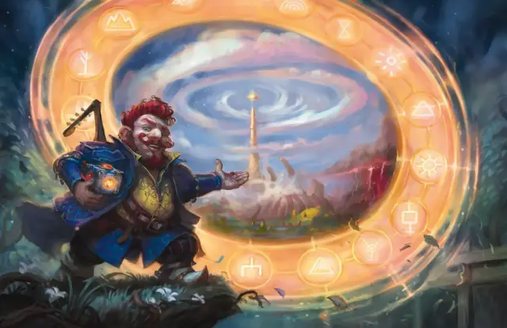

Врата
Gate
9 уровень, Вызов

Время сотворения 1 действие
Дистанция 60 футов
Компоненты В, С, М (бриллиант, стоящий как минимум 5 000 зм)
Длительность Концентрация, вплоть до 1 минуты
Классы Волшебник, Жрец, Колдун, Чародей
Вы создаёте портал, соединяющий свободное пространство, видимое вами в пределах дистанции, с точным местом на другом плане существования. Портал представляет собой круглое отверстие, которое может быть диаметром от 5 до 20 футов. Вы можете ориентировать портал в любом направлении. Портал существует, пока заклинание активно.
На каждом плане у портала есть передняя и задняя сторона. Путешествовать через портал можно только проходя через его переднюю часть. Всё, что так проходит, мгновенно перемещается на другой план, появляясь в свободном пространстве рядом с порталом.
Божества и другие планарные правители могут предотвращать создание порталов этим заклинанием в их присутствии или где угодно в пределах их домена.
Когда вы накладываете это заклинание, вы можете назвать имя конкретного существа (псевдоним, титул или прозвище не подходят). Если это существо находится на другом плане, портал открывается непосредственно возле него, и это существо втягивается, оказываясь в ближайшем свободном пространстве с вашей стороны портала. Вы не получаете над ним никакого особого контроля, и оно может действовать так, как сочтёт нужным Мастер. Оно может уйти, может напасть на вас, а может помочь вам.